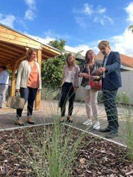

Garderie des vacances – changement de lieu

ATTENTION ! CHANGEMENT DE LIEU POUR LA GARDERIE DES VACANCES À PARTIR D’AVRIL 2026 ET PENDANT LES TRAVAUX A L’ECOLE MATERNELLE RIED : NOUVEAU LIEU DE LA GARDERIE DES VACANCES POUR LES 3-6 ANS A compter du lundi 13 avril 2026, la garderie des vacances se déroulera au Périscolaire de l’école du Centre – 3 rue […]
Horaires d’accueil service des affaires scolaires

À COMPTER DU 2 JUILLET 2024 LE SERVICE DES AFFAIRES SCOLAIRES AJUSTE SES HORAIRES D’ACCUEIL Afin d’assurer une meilleure coordination des équipes du périscolaire, le service des Affaires scolaires sera fermé au public les mardis après-midi. Le service restera néanmoins joignable par messagerie affaires-scolaires@ville-hoenheim.fr ou par téléphone au 03 88 19 23 70. Récapitulatif des […]
Inaugurations d’espaces pédagogiques

A l’issue de deux années de travaux, les nouveaux espaces pédagogiques en extérieur à Hœnheim ont été inaugurés les jeudi et vendredi 16 et 17 septembre 2021.
Scolaire

Service éducation Ce service s’occupe des écoles maternelles et élémentaires du Centre et du Ried, de la restauration scolaire, des dérogations de secteur scolaire, des garderies périscolaires. Il gère les ATSEM et les agents d’entretien. L’école de musique municipale relève de ce service. Calendrier scolaire Pour tout renseignement : Service éducation au […]